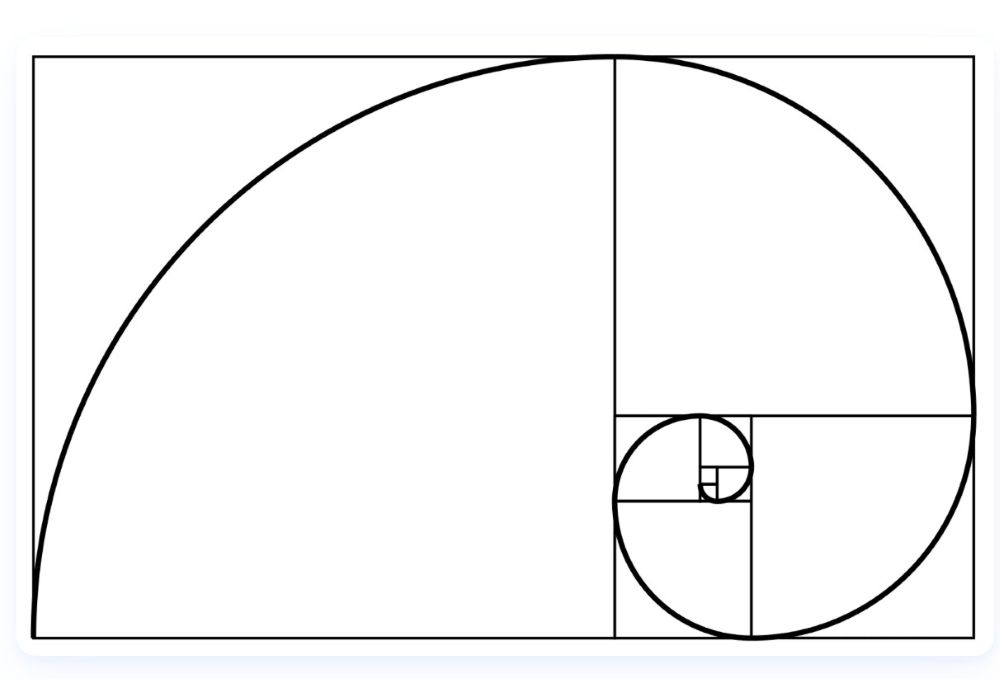

I first encountered the golden ratio — the proportion $\phi \approx 1.618$ — more than twenty years ago in The Da Vinci Code. Dan Brown described it as a “divine proportion,” a hidden structure running through nature, art, and architecture. He tied it to the Fibonacci sequence (1, 1, 2, 3, 5, 8, 13…), the simple pattern that generates the spirals we see in sunflowers, pinecones, shells, and even galaxies. It was the first time something reminded me that there is often far more to life than what sits on the surface — that beneath even the most ordinary things, there can be deeper meanings and hidden structures.
I loved the idea, but once I closed the book, it faded quietly into the background of my life.
Years later, while reading Lon Milo DuQuette’s The Chicken Qabalah, something stirred that I didn’t expect. The book only briefly mentions the golden ratio but it does explore the idea that reality has layers beneath the surface. DuQuette introduces three classic Qabalistic techniques — Gematria, Notariqon, and Temurah — each designed to reveal hidden meaning inside ordinary words.
Gematria interprets Hebrew words by their numerical values, revealing hidden links between terms that share the same sum; Notariqon forms new meanings by treating the first or last letters of words as acronyms or by expanding a single word into a phrase; and Temura uncovers alternate readings by substituting or permuting letters according to fixed cipher systems. These interpretive techniques have been used for many centuries within Jewish textual study and later became central pillars of Kabbalistic tradition, where they were preserved, systematized, and transmitted as part of Judaism’s broader mystical heritage.
Reading about these techniques reawakened something in me: the sense that the world is full of hidden architecture. That meaning is layered. That the surface is never the whole story. And in that mindset — primed to notice deeper patterns — the golden ratio resurfaced in my life with new resonance.
That recognition sent me down a rabbit hole. I began researching the golden ratio again, not casually but with real curiosity. I looked at how the Fibonacci sequence appears in plant growth, how spirals form in nature, how proportions repeat in art and design, how balance emerges from simple numerical relationships. And the more I learned, the more fascinated I became.
And once the idea returned, I began seeing it everywhere.
- In the spiral of a fern unfurling
- In the branching of trees
- In the petal counts of flowers
- In the way certain spaces feel intuitively balanced without knowing why
It felt less like learning something new and more like remembering something I had always known — a pattern that had been waiting patiently for me to notice it again.
This post is about that rediscovery — the concept itself, the way it re-entered my life, and the rhythm it awakened in how I perceive the world. The practical applications of this pattern — how it shapes garden beds, pathways, color rhythm, furniture placement, and artwork — live in the Garden and Craft pillars. But the seed of all of that begins here.
For sources, further reading, and the texts that shaped this rediscovery, visit the Resources sub-pillar under Rhythm.